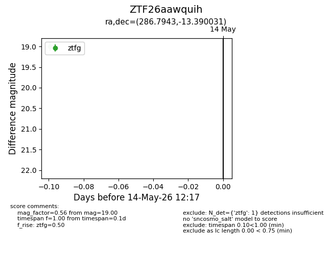
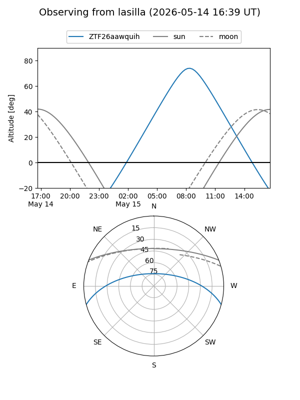
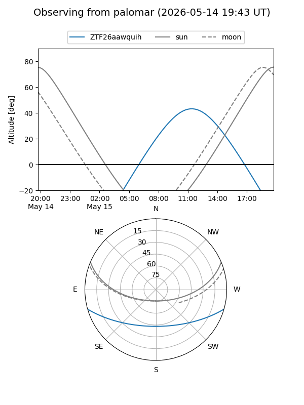

ZTF26aawquih
Target ZTF26aawquih at 2026-05-14 12:19
Aliases and brokers:
FINK: link
Lasair: link
ALeRCE: link
alt names
ZTF26aawquih (ztf,fink_ztf)
Coordinates:
equatorial (ra, dec) = 286.7943,-13.39003
equatorial (HMS+DMS) = 19:07:10.62,-13:23:24.11
galactic (l, b) = (22.6726,-9.49769)
Flags:
Photometry:
last ztfg=19.00
1 ztfg detections
Lightcurve

Visibility


Additional plots